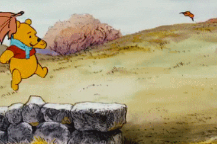

GIF Format Example

About This Image
This is a GIF of Winnie the Pooh wearing a blue scarf jumping along a stone wall. With orange and brown leaves blowing in the air and a orange leaf blows overtop his head and he jumps for it and falls missing the leaf and his scarf falls off
Why GIF Format?
Gif Works for this image because it is an actual animation of Winne the Pooh moving with the fall leaves.
Image source: Giphy